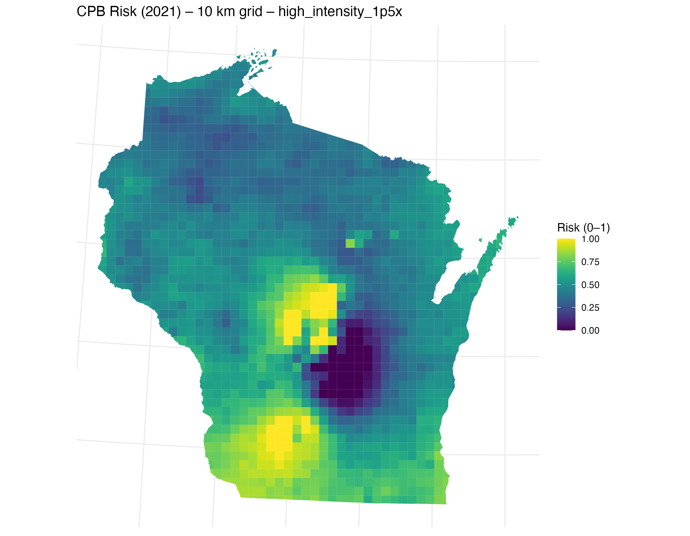

Wisconsin-wide modeling of CPB abundance using field scouting (2014–2024), climate, and crop history. We compare LMM, GAM, and a spatial mixed-effects model (spaMM) and produce 10×10 km risk maps.
On this page
- Data sources & engineered features
- 10×10 km prediction grid
- Modeling overview
- Model used for risk mapping
- Risk map generation
- Scenarios
- Reproducibility (run order)
- Links to detailed HTML reports
Data sources & engineered features
Field scouting
Annual CPB abundance per field (adults + larvae), with farm, year, and coordinates.
Crop history (CDL)
- Field-level weighted potato proportion (5-year, recency weights 5–1; range 0–1).
- Landscape potato intensity within 1.5 km (same 5-year weighting; range 0–1).
Climate features
For the modeling datasets, climate was added in Python using the
meteostat API (daily series by point). We derived compact summaries such as:
cumulative GDD, heavy summer rainfall days (> 25 mm), coldest winter day, seasonal means,
and a few variability counts.
For the 10×10 km risk-map predictions, we used gridded PRISM rasters to create the same set of covariates on the grid.
10×10 km prediction grid
We tile Wisconsin with an equal-area 10×10 km grid, clip to the state outline, and compute centroids (stored as lon/lat). These centroids are used to extract or aggregate covariates for prediction.
data/interim/grid10km.gpkg # grid polygons + IDs
data/interim/grid10km_centroids.csv # grid10_id, lon, lat
Modeling overview
- Linear mixed-effects model (LMM) — fixed climate/crop effects; random intercepts for Farm and Year.
- Generalized additive model (GAM) — same fixed effects plus smoothers for space (lat, lon) and for Year and Farm.
- Spatial mixed-effects model (spaMM) — Matérn spatial random field + random intercepts for Farm and Year.
Predictors most consistently associated with higher CPB abundance: cumulative GDD, landscape potato intensity (1.5 km), warmer coldest winter day; while heavy summer rainfall days show a negative association.
Model used for risk mapping
For statewide maps we use a reduced spaMM that includes only the significant predictors. A short comparison to the full spaMM is in Risk-map Model Details.
Risk map generation
- Build standardized covariates per grid cell (PRISM + CDL features, matching model scaling).
- Predict abundance with the reduced spaMM.
- Rescale predictions to a 0–1 risk index (interpretability).
- Render a palette where darker = lower risk (≈0) and lighter/yellow = higher risk (≈1).
data/processed/grid10km_risk_2021.csv # grid10_id, lon, lat, risk_index
data/processed/grid10km_risk_2021.gpkg # polygons + risk_index
figures/CPB_Risk_WI_10km_2021_baseline.png
Scenarios
We vary landscape potato intensity uniformly across the grid:
Low Intensity (x0.7)
High Intensity (x1.5)
Reproducibility (run order)
- Grid: create 10×10 km grid & centroids.
- Climate (model tables): add features via Python
meteostatat field points. - Climate (risk map): build PRISM-based features on the grid.
- CDL features: five-year weighted field proportion & 1.5 km intensity.
- Final table: join features →
data/processed/final_data_for_modeling.csv. - Fit models: LMM, GAM, spaMM; save objects/diagnostics.
- Predict to grid: reduced spaMM → 0–1 risk index → CSV/GPKG/PNGs.
- Scenarios: re-predict with intensity multipliers.
Links to detailed HTML reports
Repository: GitHub